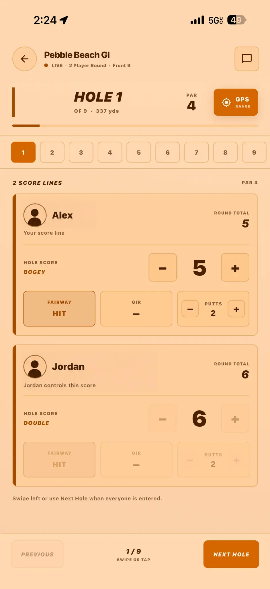
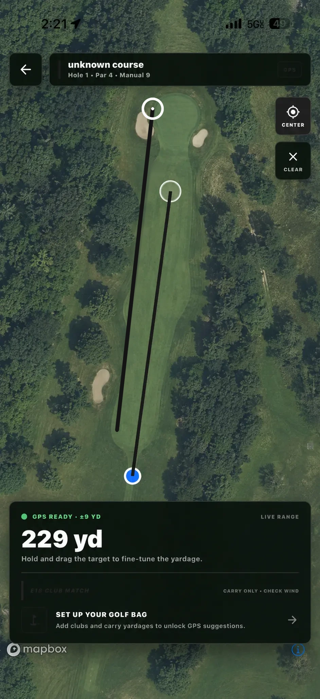

You should remember the shot—not the screen you used to record it.
Emergency 18 / In play
One app for the whole round.
Built around the moments that actually happen from the first tee to the final score.


01The starting point
01The starting point
Everything you need. Nothing fighting for attention.
Start a solo, live, or scramble round in seconds. Recent form, friends, stats, and round history stay close without turning the home screen into a dashboard maze.
02Live scoring
Keep the group moving and the scorecard together.
Track scores, putts, fairways, greens, and side quests while everyone follows the same round. Built for quick taps between shots—not a meeting with your phone.
03GPS Range
Pick a target. Get the number. Choose the club.
Tap anywhere on the hole, drag the target to fine-tune it, and see a club match from your own golf bag. The course stays visible and the decision stays simple.
Personal, not noisy
Make it feel like yours.
The site stays black and white. Your app doesn’t have to. Choose a restrained base or bring some color to the round.
Classic
Wilkerson Digital / Oklahoma
Small team. High bar.
Wilkerson Digital is an independent software studio. We make focused products with a point of view, then improve them alongside the people who actually use them.
Emergency 18 is the first. We are not pretending there are twelve products behind it. Right now, the work is simple: make this one excellent.
Now testing
Build 15 is on the course.
Emergency 18 is in external beta on iPhone. Play a round, push the GPS, and tell us exactly where it gets in the way.